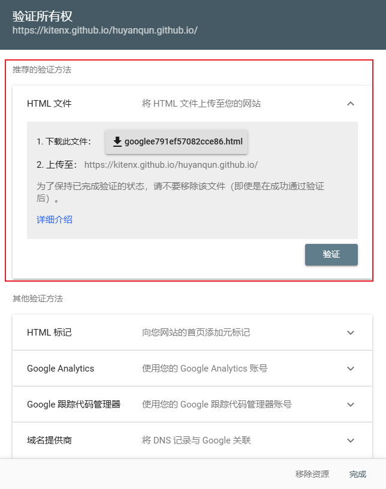
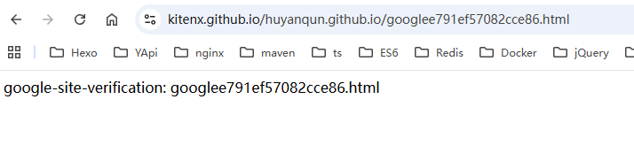
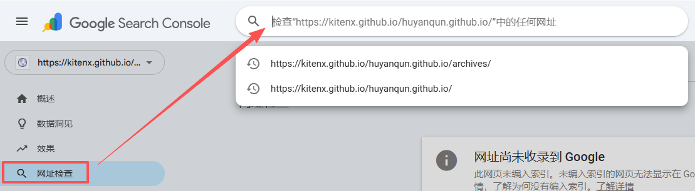
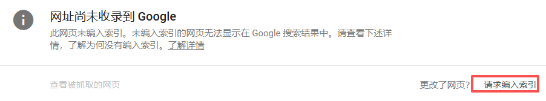
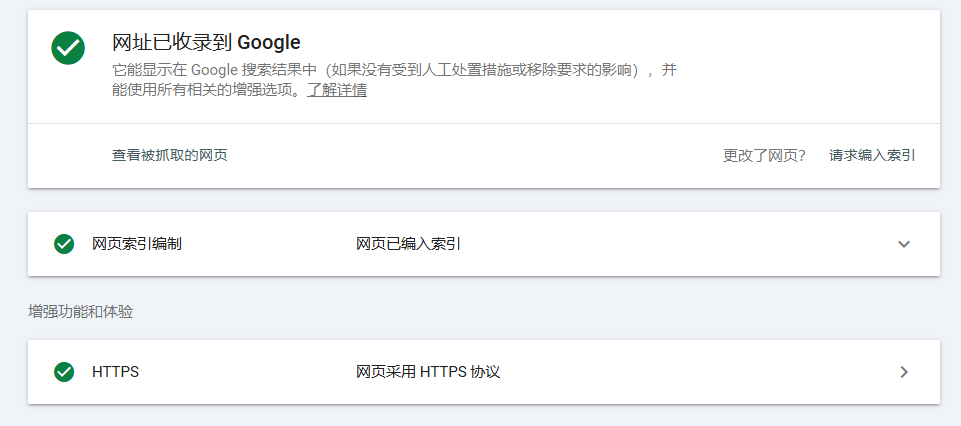

如何被Google和Bing收录
本文最后更新于 2026年1月16日 下午
在使用 Hexo 搭建个人博客后，很多人都会遇到一个问题
网站已经上线，但在 Google / Bing 搜索中却完全搜不到
Hexo 博客为什么默认搜不到
Hexo 是一个纯静态站点生成器，本身不具备自动推送搜索引擎的能力：
- ❌ 没有后端接口
- ❌ 不会主动通知搜索引擎
- ❌ 新站点权重极低
所以如果什么都不做，搜索引擎只能靠“偶然爬取”，速度非常慢，甚至长期不收录。
上线前的基础准备（很重要）
在提交搜索引擎之前，需要先确保下面几点已经完成：
1️⃣ 网站可以正常访问
- 域名已解析
- HTTPS 正常（强烈建议）
- 无 403 / 404 / 重定向死循环
可以直接在浏览器访问你的域名确认。
2️⃣ 确保没有禁止爬虫
检查 Hexo 根目录是否存在 robots.txt：
1 | |
如果出现下面内容，会直接导致不收录：
1 | |
3️⃣ 页面中存在有效内容
- 至少 5～10 篇原创文章
- 每篇文章有标题、正文
- 避免空站 / 只有首页
生成 sitemap（站点地图）
sitemap 是搜索引擎最重要的入口文件之一。
1️⃣ 安装插件
1 | |
2️⃣ 修改 _config.yml
1 | |
3️⃣ 重新生成并部署
1 | |
即可在 public 文件夹下找到新生成的 sitemap.xml 文件
访问以下地址确认是否生成成功：
https://你的域名/sitemap.xml
提交 Google Search Console
1️⃣ 进入控制台
👉 https://search.google.com/search-console
2️⃣ 添加网站
推荐选择 URL 前缀方式，例如：
1 | |
在弹出一个界面后，点击【前往资源界面】
3️⃣ 下载验证 HTML 文件（推荐）
下载文件之后将 HTML 文件放入 Hexo 项目的 source 目录下
在 _config.yml配置文件里面添加
1 | |
4️⃣ 重新生成并部署
1 | |
部署完成后，访问：
5️⃣ 完成验证
回到 Google Search Console，点击 验证，即可通过。
然后在 “站点地图” 中提交：
1 | |
提交成功后，等待 Google 抓取。
⏱ 一般 1～7 天内开始出现收录
手动请求编入索引
根据个人观察，Google 及时获取到站点地图后似乎不会立刻根据站点地图爬取网站，因此推荐再自行进行一次手动请求编入索引
具体流程为：点击 GSC 的【网址检查】或者直接在顶部输入栏输入网站的根地址（也可以是其他子页面地址）
等待结果返回后，点击【请求编入索引】即可
收录成功
提交 Bing Webmaster Tools
1️⃣ 进入 Bing 管理工具
👉 https://www.bing.com/webmasters
2️⃣ 添加站点
支持：
- sitemap 导入
- 或直接导入 Google Search Console 数据（推荐）
3️⃣下载 Bing 验证文件放入 source 目录 部署提交 sitemap
文件名通常类似：
1 | |
Bing 通常比 Google 收录更快。
如何确认是否被收录？
Google / Bing 通用方式：
1 | |
如果能看到页面列表，说明已经成功收录 🎉